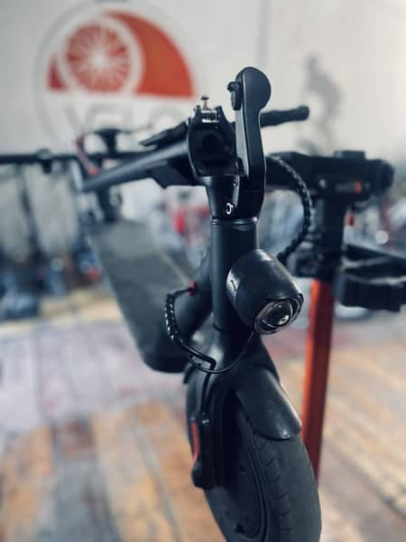
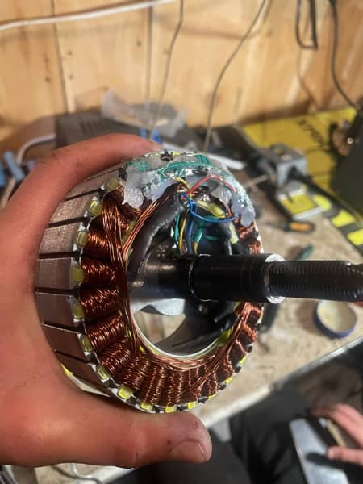

Ремонт електросамокатів Бориспіль.
Ремонтуємо:
- електросамокати
- електровелосипеди
- гіроборди
- моноколеса
- самокати
- дитячі авто
Заміна або ремонт акумулятора: тестування акумулятора, заміна елементів живлення або акумулятора.
Ремонт двигуна: перевірка та ремонт моторів, заміна датчиків холу, підшипників або двигуна в цілому.
Ремонт або заміна електроніки: робота з контролерами, платами, датчиками, а також з’єднаннями кабелів тощо.
Ремонт механічних частин: заміна коліс, підшипників, гальмівних колодок, ремонт або заміна керма, платформи.
Бориспіль. вул. Головатого 83

Базове ТО
600 грн
- Діагностика самокату
- Підтягування усіх вузлів самокату
- Регулювання люфтів кермової колонки і втулок (без розбирання).
- Регулювання гальм.
- Можливо окремо додати інші види ремонтних робіт за наявності такої потреби. Встановлюється під час проведення ТО.

Повне ТО
1200-2500 грн
- Базове ТО +
- Перебирання кермової колонки із заміною мастила.
- Перебирання колес із заміною мастила.
- Заміна тросів і сорочок перемикачів швидкостей з налаштуванням.
- Заміна тросів і сорочок гальмівної системи ,прокачка гідроліній, заміна колодок.